はじめに
LINE公式アカウントに届いたお客様の質問には、AIが自動でお答えします。AIが答えられない質問だけ、オーナー様にメールでお知らせします。
オーナー様にしていただくことは、次の4つです。
| いつ | すること | 見るところ |
|---|---|---|
| お知らせメールが届いたとき | LINEのチャット画面から、お客様に返信する | このマニュアルの「メールが届いたら」 |
| メニュー・料金・営業時間などが変わったとき | 「お店の情報」のスプレッドシートを直す | 「お店の情報を直す」 |
| 臨時休業や営業時間の変更があるとき | スマホのGoogleカレンダーに予定を入れる | 「臨時休業・営業時間の変更を知らせる」 |
| ときどき（月に1回ほど） | 質問の記録を見て、AIが答えられなかった質問の答えを「よくある質問」に足す | 「記録と個人情報」 |
AIは「お店の情報」のスプレッドシートとカレンダーに書いてあることだけをもとに答えます。書いていないことは推測で答えず、オーナー様にお知らせします。
メールが届いたら
件名が「【LINE】お客様への返信をお願いします（〇〇 様）」のメールが届いたら、LINEのチャット画面からお客様に返信してください。お客様には、AIがすでに「担当者からお返事いたします」と返しています。
メールには次のことが書いてあります。
- お客様のLINEの表示名
- AIが答えられなかった理由（例：「明日の14時の予約の申し込み」）
- お客様の質問と、AIがお客様に返した文
- 「AIの返信に戻す」リンク
電話番号やメールアドレスは「＊＊＊」に置き換えてあります。全文はLINEのチャット画面で見られます。
返信のしかた
- スマホで「LINE公式アカウント」のアプリを開く（パソコンならメールのリンク https://chat.line.biz/ を開く）
- 下の「チャット」を押す
- メールに書いてある表示名のお客様を押す
- いちばん下の入力欄に返信を書いて、送信する
AIが24時間止まります
オーナー様とお客様のやりとりに、AIが口をはさまないようにしています。メールが届いたお客様には、そのあと24時間、AIは返信しません。この間にお客様から届いたメッセージは、チャット画面でご確認ください。
対応が終わって早めにAIに戻したいときは、次のようにします。
- お知らせメールの「AIの返信に戻す」の下のリンクを押す
- 「〇〇 様への返信を、AIに戻しますか？」と出るので、お客様の名前を確かめて「AIの返信に戻す」ボタンを押す
- 「〇〇 様への返信を、AIに戻しました。」と出れば完了（「すでにAIの返信に戻っています」と出たときも、戻っています）
24時間たてば、何もしなくてもAIの返信に戻ります。リンクを押すのは、早く戻したいときだけで構いません。
お店の情報を直す
メニュー・料金・営業時間などが変わったら、「お店の情報」のスプレッドシートを直してください。直した内容は、次にお客様から質問が届いたときから、すぐにAIの答えに使われます（保存ボタンはありません。入力すると自動で保存されます）。
スプレッドシートは、パソコンで開くと直しやすくなります。スマホなら「Googleスプレッドシート」のアプリでも直せます。
「お店の情報」のスプレッドシート：https://docs.google.com/spreadsheets/d/xxxxxxxx
（架空のリンクです。お渡しするときに本物に差し替えます）
| 下のタブ | 書くこと | 書き方の例 |
|---|---|---|
| 基本情報 | 店名・住所・営業時間・定休日・駐車場・予約の方法・支払い方法など | 定休日：「毎週月曜日（祝日の場合は翌日の火曜日）」 |
| メニュー | 1行に1つのメニュー。カテゴリ、メニュー名、料金（税込）、所要時間の目安、説明 | カット｜大人カット｜4400｜60｜シャンプー・ブロー込み |
| よくある質問 | お客様によく聞かれることと、その答え | 質問：「子ども連れでも大丈夫？」、回答：「はい。キッズスペースがあります」 |
書くときの注意
- 料金は数字だけを書いてください（「4400」。「円」は自動で付きます）。所要時間も数字だけなら「分」が付きます
- メニューをやめたら、その行ごと消してください。残っていると、AIがそのメニューを案内します
- いちばん上の行（見出し）と、タブの名前は変えないでください。AIが情報を読めなくなります
- このスプレッドシートには、お客様の名前や電話番号を書かないでください（書いたことは、AIを通してお客様に伝わることがあります）
- 「値引きはしていません」「学割はありません」のように、「できないこと」も書いておくと、AIが自分で答えられ、お知らせメールが減ります
直すのが難しいときや、書き方に迷ったときは、開発者にご相談ください。
臨時休業・営業時間の変更を知らせる
臨時休業や「この日は17時まで」などは、スマホのGoogleカレンダーに予定を入れるだけで、AIがお客様にお伝えします。予定は、「お店のお知らせ（LINEのAIが読みます）」というカレンダーに入れてください。このカレンダーは、公開のときに開発者がオーナー様のGoogleアカウントに共有します。
祝日は自動でわかるので、入れる必要はありません。
予定の入れ方（スマホのGoogleカレンダーのアプリ）
- 右下の「＋」を押して、「予定」を押す
- いちばん上の「タイトルを追加」に、「臨時休業」「17時まで営業」などを書く
- 一日中のこと（臨時休業など）なら「終日」をオンにする。何日も続くときは、終わりの日付も選ぶ
- カレンダーの名前のところを押して、「お店のお知らせ（LINEのAIが読みます）」を選ぶ
- お客様に伝えたいことがあれば、「説明を追加」に書く（例：「研修のためお休みします。翌日から通常どおり営業します。」）
- 右上の「保存」を押す
やめるときは、その予定を消せば、AIもふだんの営業時間で答えるように戻ります。
注意
- AIは、今日から2週間先までの予定を読みます。それより先の予定も前もって入れておけますが、AIがお客様に伝えるのはその日2週間前からです
- このカレンダーには、お客様の予約や名前などを入れないでください。入れた予定は、AIを通してほかのお客様に伝わることがあります。予約の管理には、別のカレンダーをお使いください
- カレンダーが表示されないときは、アプリの左上の「≡」を押して、「お店のお知らせ（LINEのAIが読みます）」にチェックが入っているか確かめてください
お知らせを常連さんに送る
月に1回のお知らせは、「常連」のタグを付けたお客様だけに送ります。LINEの無料プランで送れるのは月200通（届けた人数の合計）なので、友だち全員（約300人）には送れません。常連さん約100人に送れば、月100通で収まります。
AIの自動返信は、この200通には数えません。
1. 常連さんに「常連」のタグを付ける（パソコンで）
最初に一度だけ、常連さんに1人ずつタグを付けます。そのあとは、新しい常連さんに足していくだけです。
初めてのときだけ：「常連」のタグを作る
- パソコンで LINE Official Account Manager（https://manager.line.biz/）を開き、左の「チャット」を押す
- チャットの画面の左にある「チャット設定」を押し、その下に出る「タグ」を押す
- 右の緑の「＋作成」を押し、「常連」と入れて保存する
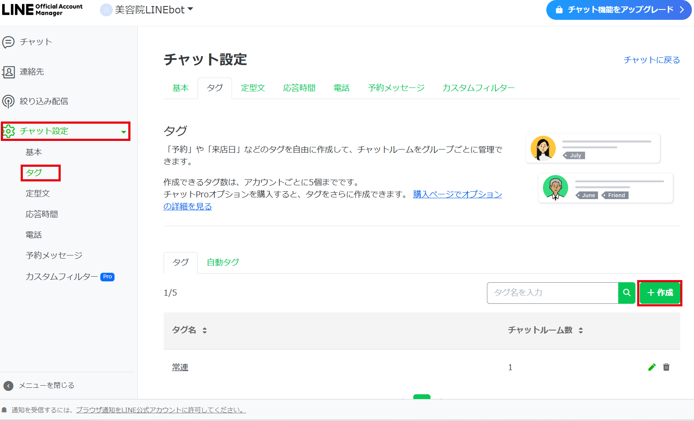
無料で作れるタグは5個までです。
常連さんにタグを付ける
- パソコンで LINE Official Account Manager（https://manager.line.biz/）を開き、左の「チャット」を押す
- 常連さんの名前を押して、チャットを開く
- 画面の右側にある「タグを追加」を押す（すでにほかのタグが付いているお客様は、「タグ」の横の鉛筆のマークを押す）
- 「タグを編集」の画面が開くので、「既存のタグ」から「常連」を選んで「保存」を押す（「常連」が一覧にないときは、まだタグを作っていません。この画面では作れないので、先に上の手順で作ってください）
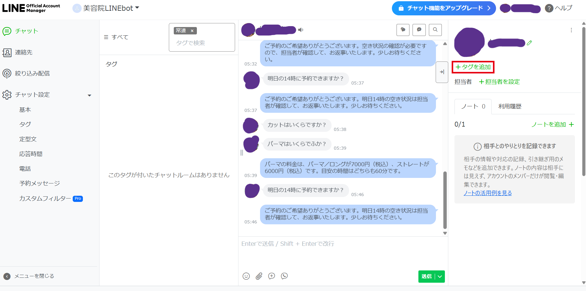
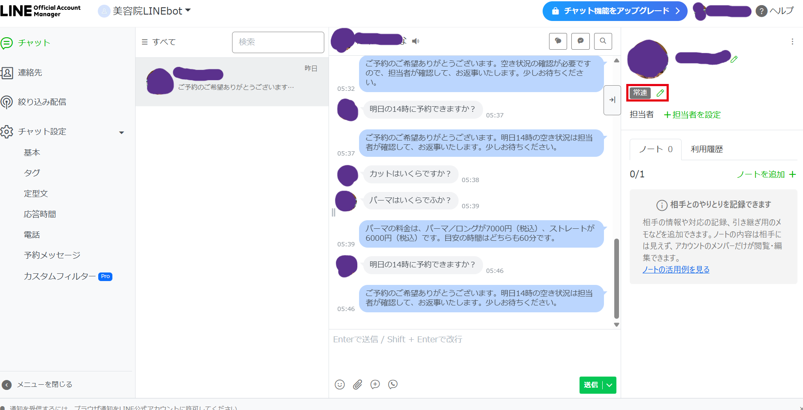
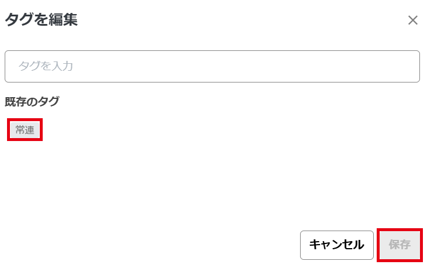
チャットの一覧に出てこない常連さんには、ご来店のときに「LINEで何か一言送ってください」とお願いすると、一覧に出るようになります。
2. 「常連」のオーディエンスを作る（最初の1回だけ・パソコンで）
「オーディエンス」は、お知らせを送る相手のグループです。パソコンの管理画面でしか作れません。
- パソコンで https://manager.line.biz/ を開き、お店のアカウントを選ぶ
- 左のメニューの「データ管理」の中の「オーディエンス」を押す（「データ管理」は、左のメニューを下にスクロールすると出てきます）
- 右上の緑の「作成」を押し、「オーディエンスタイプ」の「選択」を押して「チャットタグ」を選ぶ
- 「オーディエンス名」に「常連」と入れ、下の「ターゲット設定」の一覧で、「常連」の行の右にある「選択」を押して保存する（すでに同じタグでオーディエンスを作ってあると、「選択」は灰色で押せません。「選択できるタグはありません」と出るときは、まだタグを作っていません。先に上の「1.」でタグを作ってください）
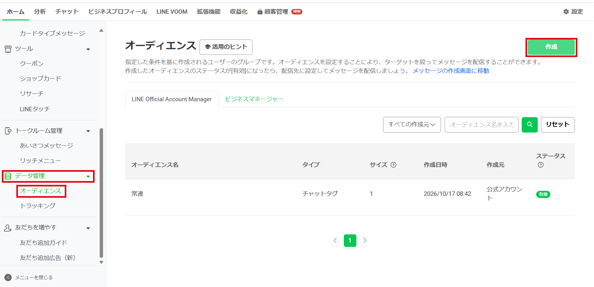
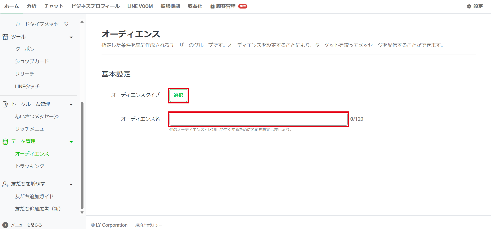
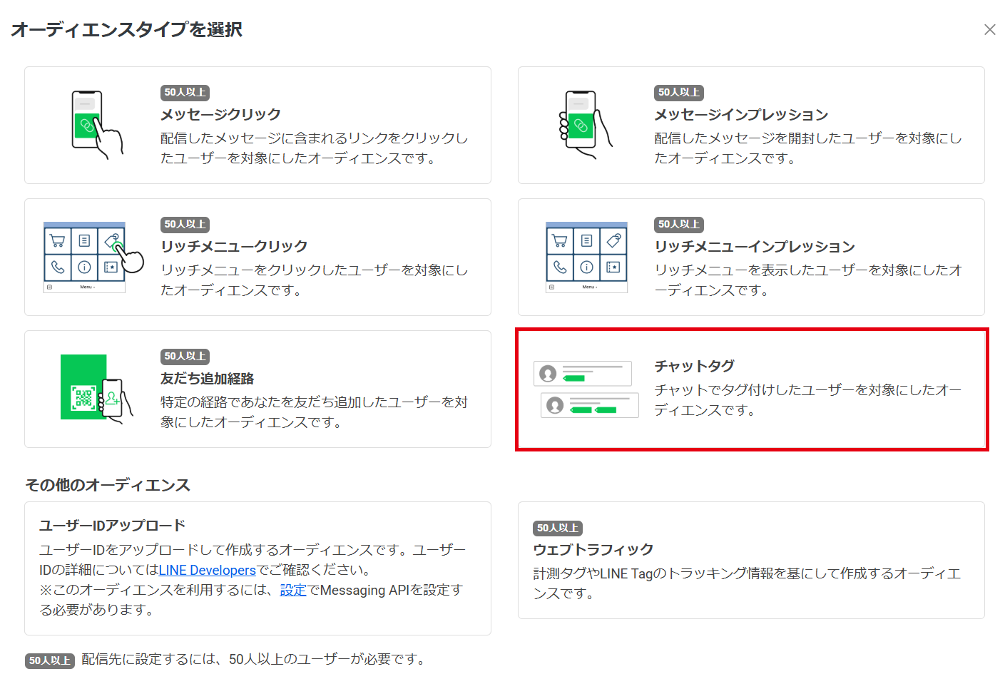
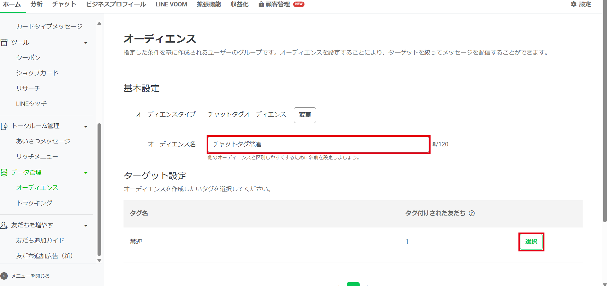
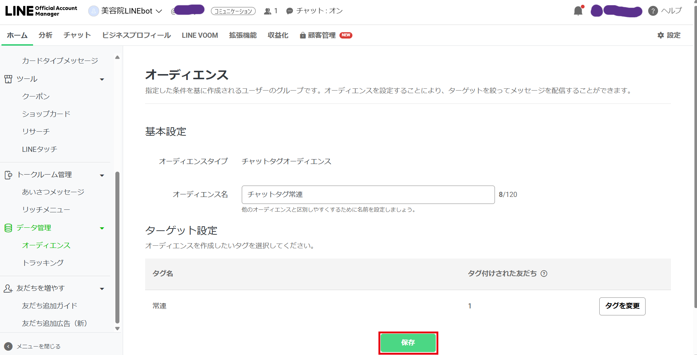
作ったばかりのときは、一覧のステータスが「準備中」です。しばらくすると「有効」になり、お知らせの配信先に使えるようになります。
チャットタグのオーディエンスは、タグを付けたお客様が1人からでも作れて、お知らせを送れます（テスト用のアカウントで、1人に届くことを確かめました）。
3. お知らせを送る（毎月・パソコンで）
- https://manager.line.biz/ の「メッセージ配信」→「メッセージを作成」を押す
- 「配信先」で「絞り込み」を選び、「オーディエンス」の鉛筆のマークを押す。一覧の「常連」の「含める」を押して、「追加」を押す
- 右の「ターゲット推計」の人数が、その月に送れる残りの通数より少ないかを確かめる（下の「高度な設定」はチェックしないままで構いません）
- お知らせの文を書いて、「配信」を押す
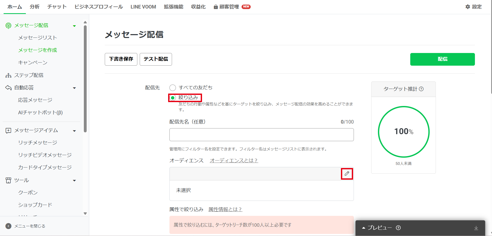
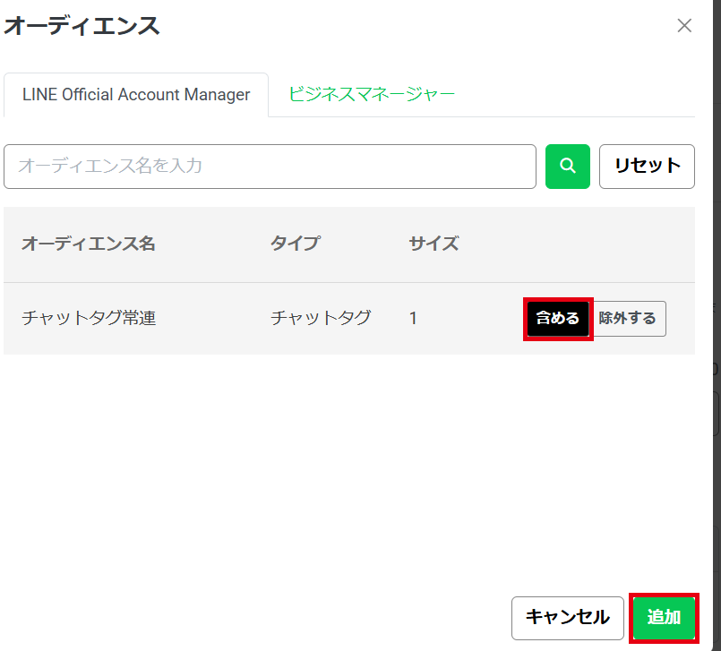
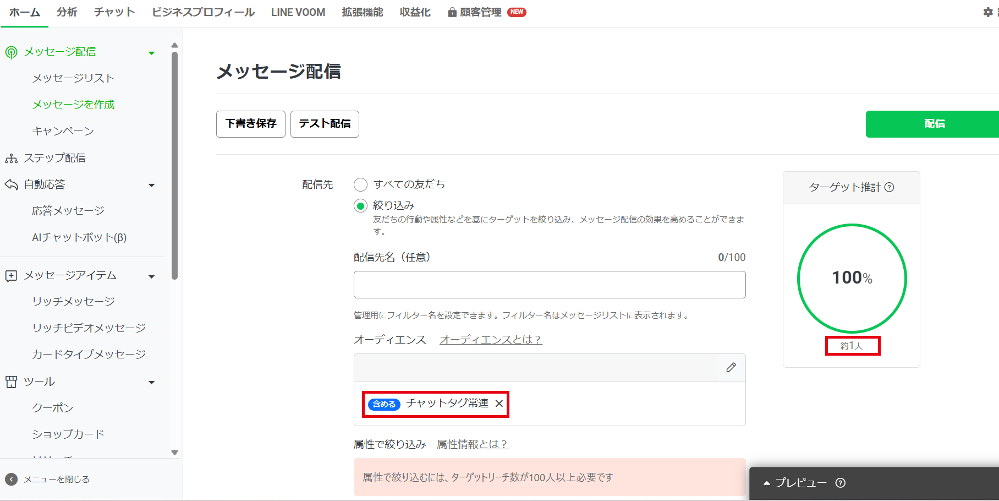
注意
- その月に送れる残りの通数は、管理画面の右上で確かめられます。臨時のお知らせをもう1回送るときは、残りを確かめてから送ってください
- 画面のボタンの名前は、LINEの更新で変わることがあります。見つからないときは開発者にご相談ください
- 常連さんが200人に近づいたら、有料のライトプラン（月約5,000通まで送れる）を考える時期です
記録と個人情報
お客様の質問とAIの答えは、「記録（お客様の情報あり・共有しない）」のスプレッドシートに残り、6か月で自動で消えます。月に1回ほど見て、AIが答えられなかった質問の答えを「よくある質問」に足すと、AIが答えられることが増えていきます。
「記録」のスプレッドシート：https://docs.google.com/spreadsheets/d/yyyyyyyy
（架空のリンクです。お渡しするときに本物に差し替えます）
| 下のタブ | 入っているもの | 消えるとき |
|---|---|---|
| 質問の記録 | 日時、質問、AIの答え、オーナー様に回したか、その理由。お客様の名前は入りません | 6か月たったら自動で |
| AIを止めているお客様 | オーナー様が対応中のお客様（LINEのID、表示名） | AIの返信に戻ったら自動で |
「AIを止めているお客様」の行を消しても、そのお客様はAIの返信に戻ります。メールのリンクが使えないときは、この方法でも構いません。
守っていただきたいこと
- 「記録」のスプレッドシートは、スタッフさんを含め、ほかの人に共有しないでください（見られるのはオーナー様と、保守の契約中の開発者だけです）。「お店の情報」のほうは、スタッフさんに共有しても構いません
- 「リンクを知っている全員」での共有は、どのスプレッドシートもオンにしないでください
- お店のGoogleアカウントは、2段階認証をオンのままにしてください
- お客様から「自分の記録を消してほしい」と言われたときは、開発者にご連絡ください
お客様の質問は、答えを作るためにAIの会社（Anthropic社）に送られます。そのとき、名前とLINEのIDは送らず、電話番号やメールアドレスは「＊＊＊」に置き換えています。
困ったとき
しくみは毎朝自動で点検していて、止まったときは開発者にメールが届きます。次の表で解決しないときは、開発者にご連絡ください。
| こんなとき | 確かめること |
|---|---|
| AIが返信しないお客様がいる | 「記録」の「AIを止めているお客様」にそのお客様がいれば、止めている間です。行を消すと戻ります |
| どのお客様にもAIが返信しない | 開発者にご連絡ください |
| お客様に「担当者から返信いたします」とだけ返っている | AIが一時的に使えないときの代わりの返信です。お知らせメールも届くので、チャット画面から返信してください |
| AIが間違った答えをした | 「お店の情報」に正しいことが書いてあるか確かめ、直してください。お客様にはチャット画面から訂正をお送りください。書いてあるのに間違うときは、開発者にご連絡ください |
| 臨時休業を伝えてくれない | 予定が「お店のお知らせ（LINEのAIが読みます）」のカレンダーに入っているか、その日が2週間より先でないかを確かめてください |
| お知らせメールが届かない | 迷惑メールのフォルダーを確かめてください。届いていたら「迷惑メールではない」を押してください |